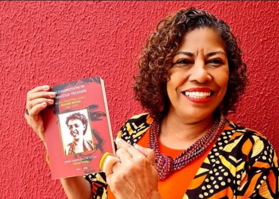
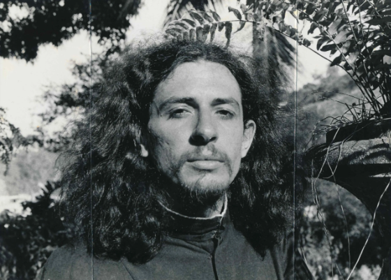

A cultura de Teresina possui grandes artistas que contribuíram para a arte e identidade do Piauí.

Artista e produtora cultural piauiense, Sônia Terra tem uma trajetória marcada pela valorização da cultura, da arte e das manifestações populares do Piauí.
A arte é uma maneira de preservar histórias, expressar sentimentos e fortalecer a identidade de um povo.

Poeta, jornalista e compositor nascido em Teresina, Torquato Neto foi um dos grandes nomes da cultura brasileira e do movimento tropicalista.
A criatividade e a liberdade de expressão são caminhos para transformar a forma como enxergamos o mundo.